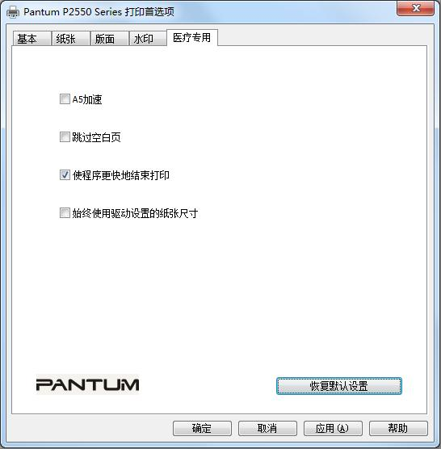
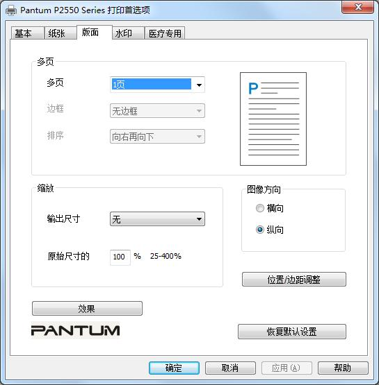
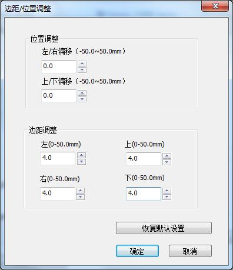

注： |
• 以下功能适用于医疗打印，进行普通打印时，不建议使用。 |
8. 医疗打印功能
8.1. 界面

8.2. 功能
8.2.1. A5加速
用户勾选该功能后，可实现对A4幅面大小的图像进行A5加速处理。
注： |
• 如果输出尺寸设置为非A4纸张（或者说非A4大小的纸张），即使用户在界面勾选了A5加速，驱动也不做加速处理；如果纸张尺寸选择A4，输出尺寸选择“无”并改变了缩放值，此时也不进行加速处理。由于A5加速功能本身只是为了解决部分医疗软件设计不规范问题，故有以上限制，一般情况下不进行加速处理。 |
8.2.2. 跳过空白页
用户勾选该功能后，可跳过该打印文档中的空白页。
8.2.3. 使程序更快地结束打印
应用程序将文档交给打印服务进行处理，以便于应用程序可以更快的从打印中返回。
注： |
• 默认勾选该功能，如果应用软件启动多个打印作业，这些打印作业并行处理，最终发送给打印机的打印作业顺序不确定；如果不启用该功能，应用软件串行处理打印作业。 |
8.2.4. 始终使用驱动设置的纸张尺寸
勾选此选项，驱动设置的纸张优先级高于应用软件。
注： |
• 默认不勾选该功能，该功能主要解决某些行业软件其使用了默认了A4纸张，但用户实际打印用的是非A4纸张，此时会造成应用软件排版异常。此时用户根据实际打印的纸张大小，在打印界面中选择该尺寸大小的纸张（也可以是用户添加的自定义纸张），并勾选该项，应用软件就会使用驱动下发的纸张大小进行排版和输出，保证其图像可以适应打印纸张。 |
8.2.5. 位置/边距调整
调整打印内容在纸张上的位置与边距。

点击按钮，弹出位置/边距调整对话框。

位置调整：调整图像打印位置。
左/右偏移：取值范围为-50.0~50.0mm，默认值为0。
上/下偏移：取值范围为-50.0~50.0mm，默认值为0。
边距调整：调整打印边距，驱动通过边距调整，可以获取不同的可打印区域
左：取值范围为0-50.0mm，默认值为4mm。
右：取值范围为0-50.0mm，默认值为4mm。
上：取值范围为0-50.0mm，默认值为4mm。
下：取值范围为0-50.0mm，默认值为4mm。
注： |
• 位置/边距调整选项在“版面页面”中出现，可以作为医疗机的功能，也适用于普通打印。如果左右边距之和大于当前纸张尺寸的宽，或上下边距之和大于当前纸张尺寸的高，给出告警：“边距中指定的值不能大于纸张尺寸”。关闭告警后，其边距输入框恢复到前一次设定的值。 |